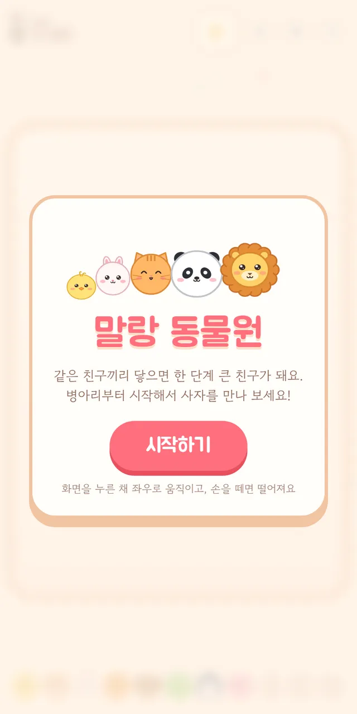
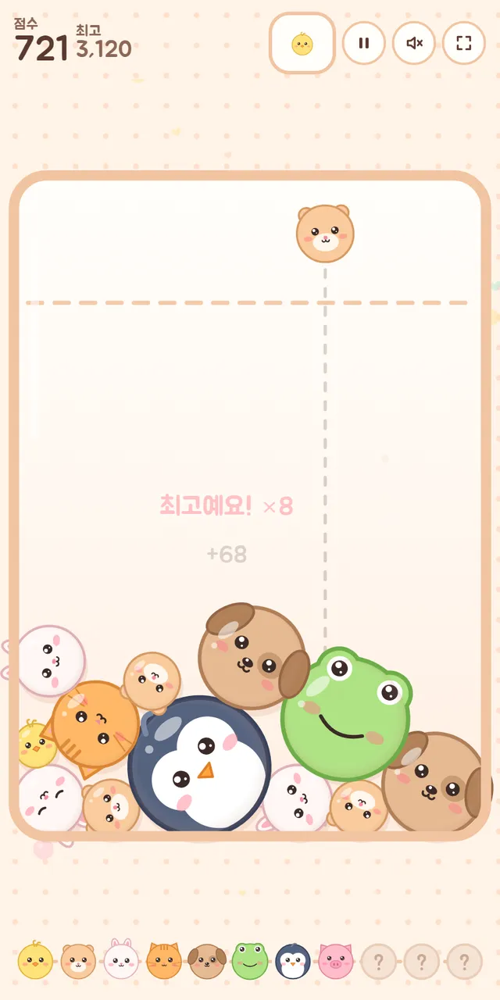
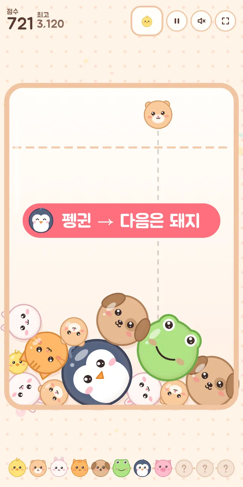

🧩 퍼즐 게임 · 무료 · 설치 없음
말랑 동물원
“같은 친구끼리 콩! 병아리에서 사자까지”
- 한 판 5~15분
- 동물 친구 11단계
- 단계 없이 끝없이
- 최고 기록·도감 저장
회원가입 없이 누르면 바로 시작돼요
어떤 게임인가요?
유리병 위에서 동물 친구를 하나씩 떨어뜨려요. 같은 친구 둘이 닿으면 「콩」 하고 한 단계 큰 친구로 변해요. 병아리, 햄스터, 토끼, 고양이, 강아지, 개구리, 펭귄, 돼지, 판다, 곰을 거쳐 마지막은 사자예요.
말랑 젤리팡과 비슷한 합치기 놀이지만 소재도 놀이 방식도 달라요. 단계와 목표가 없고, 병이 꽉 찰 때까지 한 판을 길게 이어 가며 점수를 쌓아요. 사자 둘이 만나면 둘 다 모험을 떠나며 큰 점수를 남기고, 그만큼 병에 자리가 생겨요.
친구들은 눈을 깜빡이고, 합쳐질 때 웃고, 병이 넘칠 것 같으면 겁먹은 얼굴이 돼요. 빨리 이어 합치면 「좋아요! ×2」처럼 연속 점수가 붙어요.
이렇게 해요
- STEP 1
자리를 골라 떨어뜨려요
병 위를 누른 채 좌우로 움직여 자리를 정하고, 손을 떼면 쏙 떨어져요. 위쪽 「다음」 칸에서 다음 친구를 미리 볼 수 있어요.
- STEP 2
같은 친구끼리 합쳐요
같은 동물 둘이 닿으면 한 단계 큰 친구가 돼요. 큰 친구일수록 점수가 커져요.
- STEP 3
최고 기록에 도전해요
친구가 병 위 점선을 넘은 채 오래 머물면 병이 꽉 차서 끝나요. 판 도중에 최고 기록을 넘으면 바로 함께 올라가요.


🌟 이런 것도 있어요
- 동물 도감: 화면 아래 줄에 만난 친구가 모이고, 누르면 이름과 다음 친구를 알려 줘요
- 새 친구 등장: 처음 만든 친구는 「판다 등장!」처럼 반겨 줘요
- 잠깐 쉬기: ⏸ 단추로 멈추고 이어 하거나 처음부터 다시 할 수 있어요
정해진 끝이 없어서, 같은 판도 할 때마다 다르게 흘러가요.
이런 분께 추천해요
- 목표에 쫓기지 않고 느긋하게 한 판 하고 싶은 분
- 귀여운 동물 캐릭터를 좋아하는 분
- 가족끼리 최고 기록을 번갈아 깨 보고 싶은 분
큰 친구는 한쪽 구석에, 작은 친구는 그 옆에 차례로 모아 두면 연속으로 합쳐지기 쉬워요.
📱 어떤 기기에서 하면 좋을까요?
- 가장 좋아요휴대폰 세로 화면
누르고 떼기만 하면 돼서 한 손으로도 편해요. 시작하기를 누르면 전체 화면으로 바뀌어요.
- 가장 좋아요태블릿 세로 화면
병이 크게 보여서 자리를 고르기 쉬워요.
- 좋아요컴퓨터·노트북 마우스·키보드
마우스를 움직여 자리를 고르고 클릭하면 떨어져요. ←→ 키로 옮기고 스페이스로 떨어뜨릴 수도 있어요.
오른쪽 위 메뉴(⋮ 또는 ···)에서 「다른 브라우저로 열기」를 눌러 크롬이나 사파리로 열어 주세요. 앱 안에서는 전체 화면이 안 되고 저장이 풀릴 수 있어요.
🍎 아이폰·아이패드에서는
- ① 사파리로 열기
카카오톡이나 네이버 앱 안에서는 화면이 좁아요. 「다른 브라우저로 열기」나 사파리로 열어 주세요.
- ② 홈 화면에 추가하기
아이폰은 전체 화면 버튼이 동작하지 않아요. 공유 버튼(□↑) → 「홈 화면에 추가」로 열면 주소창 없이 꽉 찬 화면이 돼요. 아이패드는 시작하기를 누르면 전체 화면이 돼요.
- ③ 소리
무음 스위치가 켜져 있으면 소리가 나지 않아요. 효과음은 화면 위 스피커 단추로 켜고 끌 수 있어요.
🤖 갤럭시 등 안드로이드에서는
크롬이나 삼성 인터넷으로 열고 시작하기를 누르면 전체 화면으로 바뀌어요. 큰 친구가 합쳐질 때 짧게 진동해요.
▶ 바로 해 보기
설치도, 회원가입도 필요 없어요.
말랑 동물원 시작하기game.edoori.co.kr/mallangzoo/